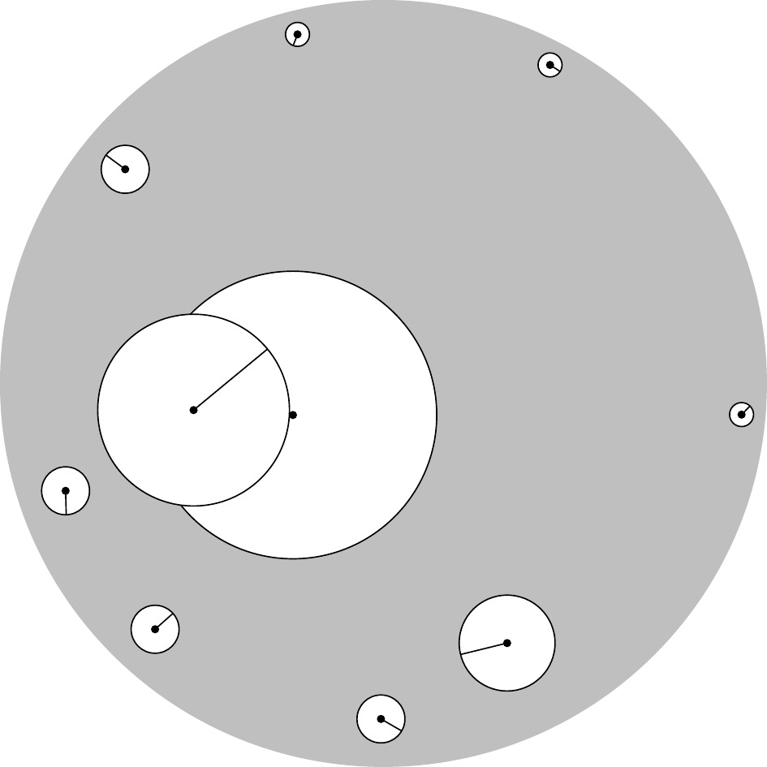

3 Topology of the complex plane
In this section we explain that most of the facts about limits, series, and continuity carry over from real analysis essentially without change.
The modulus of complex numbers defines a distance \(d(z,w)=|z-w|\) on the plane (this is the usual Euclidean distance), which determines the following standard terminology for metric spaces.
Definition 3.1 The open disc of radius \(0\leqslant r\leqslant+\iy\) centered at \(z_0\in\C\) is
\[D_r(z_0)=\{z\in\C \mid |z-z_0|<r\}.\]
The closed disc \(\ol{D}_r(z_0)\) is the set of all \(z\in\C\) with \(|z-z_0|\leqslant r.\)
Definition 3.2 A subset \(O\subset\C\) is open if for every point \(z_0\in O\) there exists \(r>0\) such that \(D_r(z_0)\subset O\) (see Figure 3.1). A subset \(C\subset \C\) is called closed if the complement \(O=\C\setminus C\) is an open subset.
A subset \(B\subset\C\) is bounded if \(B\subset D_r(0)\) for some \(0<r<\iy.\)
Remark 3.1. The above notion of open set determines a topology on \(\C.\)
Definition 3.3 A sequence of complex numbers \((z_n)_{n\in\N}\) has the limit \(\ze\in\C\) (or is convergent to \(\ze\)), written \(\lim_{n\to\iy}z_n=\ze,\) if \[\forall\ep>0\;\exists n_0\in\N\;\forall n\geqslant n_0: |z_n-\ze|<\ep.\]
Equivalently, \(\lim_{n\to\iy}|z_n-\ze|=0.\) We call \((z_n)_{n\in\N}\) a Cauchy sequence if \[\forall\ep>0\;\exists n_0\in\N\;\forall n,m\geqslant n_0: |z_n - z_m|<\ep.\]
The same argument as in real analysis shows that the limit \(w\) is unique and that every convergent sequence is a Cauchy sequence. The converse is also true by the completeness of real numbers.
Proposition 3.1 For a sequence \((z_n)_{n\in\N}\) in \(\C,\) the following are equivalent:
- There exists \(\ze\in\C\) such that \(\ze=\lim_{n\to\iy}z_n.\)
- \((z_n)_{n\in\N}\) is a Cauchy sequence.
Proof.
To prove (b)\(\implies\)(a) write \(z_n=x_n+iy_n\) and notice that \[|z_n-z_m|=\sqrt{(x_n-x_m)^2+(y_n-y_m)^2}\geqslant|x_n-x_m|,\|y_n-y_m|\]
implies that both \((x_n)_{n\in\N}\) and \((y_n)_{n\in\N}\) are Cauchy sequences in \(\R.\) By the completeness of \(\R,\) these sequences have limits \(\chi,\upsilon \in \R.\) Set \(\ze=\chi+i\upsilon\) and pick \(n_0\in\N\) such that \(|x_n-\chi|<\frac{\ep}{\sqrt{2}}\) and \(|y_n-\upsilon|<\frac{\ep}{\sqrt{2}}\) for all \(n\geqslant n_0.\) Then \[|z_n-\ze| = \sqrt{(x_n-\chi)^2+(y_n-\upsilon)^2}<\sqrt{\ep^2/2+\ep^2/2}=\ep\]
for all \(n\geqslant n_0.\) The converse, (a)\(\implies\)(b), is left as an exercise.
The advantage of Cauchy sequences is that one does not need to know the value of the limit in advance.
Definition 3.4 A series of complex numbers \((z_k)_{k\in\N}\) converges to the limit \(\ze,\) written \(\ze=\sum_{k=0}^\iy z_k,\) if the sequence of partials sums \(\bigl(w_n=\sum_{k=0}^n z_k\bigr)_{n\in\N}\) converges to \(\ze.\) We call a series absolutely convergent if the series \(\sum_{k=0}^\iy |z_k|\) is convergent.
As in real analysis, the Cauchy criterion implies that every absolutely convergent series is convergent. Absolutely convergent series may be rearranged and orders of summation may be exchanged.
Although \(\iy\notin\C,\) it will be convenient to define \(\lim_{n\to\iy}z_n=\iy\) to mean that the sequence \((z_n)_{n\in\N}\) eventually leaves every disk. Symbolically, \[\forall r>0\;\exists n_0\in\N\;\forall n\geqslant n_0: |z_n|>r.\]
We call \(\C\cup\{\iy\}\) the extended complex plane.
Definition 3.5 A point \(\ze\in\C\cup\{\iy\}\) is in the closure of \(D\subset \C\) if there exists a sequence \((z_n)_{n\in\N}\) with \(z_n\in D\) and \(\lim_{n\to\iy} z_n=\ze.\)
Let \(f\colon D\to\C\) be a complex function and let \(\ze\in\C\cup\{\iy\}\) be in the closure of \(D.\) The function \(f(z)\) has the limit \(w\in\C\cup\{\iy\}\) as \(z\to\ze,\) written \(\lim_{z\to\ze}f(z)=w,\) if for every sequence \((z_n)_{n\in\N}\) with \(z_n\in D\) and \(\lim_{n\to\iy} z_n=\ze\) we have \(\lim_{n\to\iy}f(z_n)=w.\) An equivalent \(\varepsilon\)-\(\de\)-definition is \[\forall\varepsilon>0\;\exists\de>0: 0<|z-\ze|<\de, z\in D\implies |f(z)-w|<\varepsilon.\]
A complex function \(f\colon D\to\C\) is continuous at \(\ze\in D\) if \(\lim_{z\to\ze}f(z)=f(\ze).\) We call \(f\) continuous on \(D\) if \(f\) is continuous at every \(\ze\in D.\)
Convention
There is a some ambiguity in writing an expression of the form \(\lim_{n \to \infty} a_n = f(n)\) as this could be interpreted either as a limit as a complex number \(z\) tends to inifinity or as a limit over a sequence \(a_n\).
In order to resolve this, unless explicitly stated otherwise, in this context, \(n\) shall refer to a natural number and a limit \(\lim_{n \to \infty}\) should be interpreted as a limit over a sequence indexed by the natural numbers.
Questions for further discussion
- Explain the difference between the notions ‘limit of a function’, ‘limit of a sequence’, and ‘limit of a series’.
3.1 Exercises
Exercise 3.1
Recall the ratio and root test for series of real numbers.
Solution 3.1
Let \(\sum_{k=0}^{\infty} a_n\) be a real series.
- Ratio test
-
Let \(L = \lim_{n\to \infty} \left | \frac{a_{n+1}}{a_n}\right |\)
- If \(L >1\), the the series is divergent;
- If \(L <1\) then the series is (absolutely) convergent;
- If \(L=1\) or does not exist, then the test is inconclusive.
- Root test
-
Let \(C = \limsup_{n \to \infty} \sqrt[n]{|a_n|}\)
- if \(C> 1\), then the series is divergent;
- if \(C<1\), then the series is (absolutely) convergent;
- if \(C=1\) and the limit approaches strictly from above then the series diverges;
- otherwise the test is inconclusive.
Exercise 3.2
For which \(z\in\C\) do the following limits exist? \[\lim_{n\to\iy}n^{1/n}z, \lim_{n\to\iy}z^n, \lim_{n\to\iy}\frac{z^n}{n}, \lim_{n\to\iy}\frac{z^n}{n!}, \lim_{n\to\iy}\frac{z^n}{n^n}, \lim_{n\to\iy}n!z.\]
Solution 3.2
The sequence \(n^{1/n}\) is convergent with limit equal to \(1\) and so the sequence \(n^{1/n}|z|\) is convergent for all complex numbers \(z\) with limit equal to \(z\).
If \(|z|>1,\) then \(z^n\) is unbounded, hence does not converge. If \(|z|<1,\) then \(\lim_{n\to\iy} z^n=0.\)
Suppose \(|z|=1\) and that \(\lim_{n\to\iy} z^n\) exists. As \(z^n\) is a Cauchy sequence, we have in particular that \(|z-1|=|z|^{n}|z-1| = |z^{n+1}-z^n|\to0\) for \(n\to\iy.\) Hence we must have \(z=1\) and in this case the sequence indeed converges.
As \(\frac{z^{n+1}/(n+1)}{z^n/n}=\frac{n}{n+1}z\to z\) for \(n\to\iy,\) the series \(\sum_{n=0}^\iy\frac{z^n}{n}\) converges for all \(|z|<1\) by the ratio test. Hence \(\lim\frac{z^n}{n}=0\) for all \(|z|<1.\) Alternatively, apply by l’Hôpital’s rule to the real limit \(\frac{x^n}{n},\) where \(x=|z|.\) If \(|z|=1,\) then \(|z^n/n|=1/n\to0\) as \(n\to\iy,\) so \(\lim\frac{z^n}{n}=0\) is this case also. If \(|z|>1,\) then \(\left|\frac{z^n}{n}\right|=|z|^n/n\) is unbounded (for example, by l’Hôpital’s rule) and hence the sequence is divergent.
As \(\frac{z^{n+1}/(n+1)!}{z^n/n!}=\frac{z}{n+1}\to0\) for \(n\to\iy\) the series \(\sum_{n=0}^\iy\frac{z^n}{n!}\) converges for all \(z\) by the ratio test. Hence \(\lim_{n\to\iy}\frac{z^n}{n!}=0\) for all \(z\in\C.\)
Notice that \(n^n > n!\) and so \(|z^{n}|/n! > |z^{n}|/n^{n}\) for all \(n\). Since \(z^{n}/n!\) converges to \(0\), it follows that \(z^{n}/n^{n}\) converges to \(0\) for all \(z\) as well.
The final limit is divergent as the sequence \(n!|z|\) is unbounded.
Exercise 3.3
Show that every convergent sequence \((z_n)_{n\in\N}\) of complex numbers is bounded.
Solution 3.3
Take \(\varepsilon=1.\) By assumption, there exists \(n_0\in\N\) such that for all \(n\geqslant n_0\) we have \(|z-z_n|<\varepsilon=1.\) Apply the reverse triangle inequality from Sheet 1 to obtain from this \[|z_n|-|z|\leqslant\bigl|z_n-z\bigr|<1.\] Hence \(|z_n|\leqslant C=\max\{|z|+1,|z_0|,\ldots,|z_{n_0}|\}.\)
Exercise 3.4
Let \(\sum_{k=0}^\iy z_k\) be a convergent series of complex numbers. Show that \(\lim_{k\to\iy} z_k=0.\)
Solution 3.4
By definition, the sequence of partial sums \(S_n=\sum_{k=0}^nz_k\) convergent, hence a Cauchy sequence. In particular, taking \(m=n+1\) in the definition of a Cauchy sequence, we have \(|z_n|=|S_{n+1}-S_n|\to0\) as \(n\to\iy.\)
Exercise 3.5
For which \(z\in\C\) do the following series converge? \[\sum_{k=0}^\iy kz^k,\quad \sum_{k=0}^\iy(kz)^k\]
Solution 3.5
Suppose the series \(\sum_{k=0}^\iy kz^k\) converges for \(z.\) Then by (a) and (b), \(k|z|^k\leqslant C\) is bounded. Recall that \(\lim_{k\to\iy}\sqrt[k]{x}=1\) for all \(x>0\) and that \(\lim_{k\to\iy}\sqrt[k]{k}=1.\) Hence \[|z|\leqslant\frac{\sqrt[k]{C}}{\sqrt[k]{k}}\longra 1\quad\text{as $k\to\iy.$}\] It follows that the series can only possibly converge for \(|z|\leqslant1.\) We can alternatively use the ratio test to see that convergence fails for \(|z|>1.\) If \(|z|=1,\) then \(kz^k\) is not a null sequence (the modulus is always \(1\)), hence the series does not converge by (b). If \(|z|<1,\) the series converges by the ratio test: \[\left|\frac{(k+1)z^{k+1}}{kz^k}\right|=\left(1+\frac1k\right)|z|\longra |z|<1,\quad\text{as $k\to\iy.$}\]
For the next part, suppose that the series \(\sum_{k=0}^\iy(kz)^k\) converges for \(z.\) Then by (a) and (b), \(|kz|^k\leqslant C\) is bounded. Increasing \(C,\) we may suppose that \(C\geqslant1\) and then \(\sqrt[k]{C}\leqslant C.\) Now \[|z|\leqslant\frac{\sqrt[k]{C}}{k}\longra 0\quad\text{as $k\to\iy.$}\] This implies \(z=0\) and the series indeed converges in this case.
Exercise 3.6
Let \(f\colon\C\to\C\) be a complex function. Show that \[\lim_{z\to\iy}f(z)=w\iff\lim_{z\to0}f\left(\frac{1}{z}\right)=w.\]
Solution 3.6
The left hand side means that for all \(\varepsilon>0\) there exists \(M>0\) such that \(|f(z)-w|<\varepsilon\) for all \(+\iy>|z|>M.\) The right hand side means that for all \(\varepsilon>0\) there exists \(\de>0\) such that \(|f(1/u)-w|<\varepsilon\) for all \(0<|u|<\de.\)
Upon setting \(z=1/u\) the inequalities \(+\iy>|z|>M\) and \(0<|u|<\de\) are equivalent for \(M=1/\de.\)
Exercise 3.7
The Riemann sphere is \(\mathbb{S}=\{(a,b,c)\in\R^3\mid a^2+b^2+c^2=1\}.\) Show that the stereographic projection \[F\colon\mathbb{S}\longra\C\cup\{\iy\}, F(a,b,c)= \begin{cases} \frac{a+ib}{1-c} & \text{ if }c\neq 1,\\ \iy & \text{ if }c=1. \end{cases}\]
is a bijection between the Riemann sphere and the extended complex plane. Find a formula for the inverse function.
Solution 3.7
We use the sketch to find a putative inverse \(G\colon\C\cup\{\iy\}\to\mathbb{S}.\) The line from \((0,0,1)\) to \(z=x+iy\in\C\) is parameterized as \[ \ell(t)=(1-t)(0,0,1)+t(x,y,0)=(tx,tx,1-t),\qquad t\in[0,1].\] To find the intersection points with \(\mathbb{S},\) we need to solve \[1=(tx)^2+(ty)^2+(1-t)^2=t^2(|z|^2+1)-2t+1\] for \(t.\) The solutions to this quadratic equation are \(t=0\) and \(t=\frac{2}{1+|z|^2}.\) Hence \[G(z)=\ell\left(\frac{2}{1+|z|^2}\right)=\left(\frac{2x}{1+|z|^2},\frac{2y}{1+|z|^2},\frac{|z|^2-1}{1+|z|^2}\right)\] for all \(z\in\C.\) Moreover, according to the sketch we should define \(G(\iy)=(0,0,1).\) The verifications \(F\circ G=\id_{\mathbb{S}}\) and \(G\circ F=\id_{\C\cup\{\iy\}}\) are left to the reader.